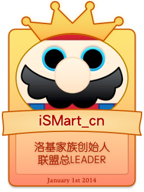
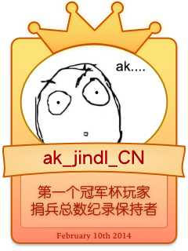
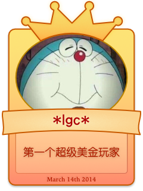
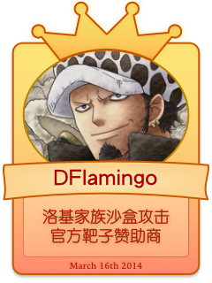
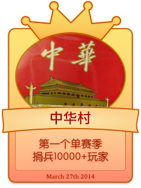
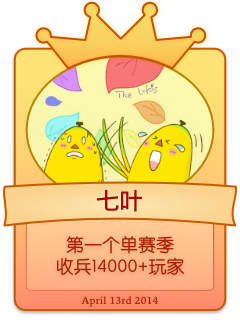
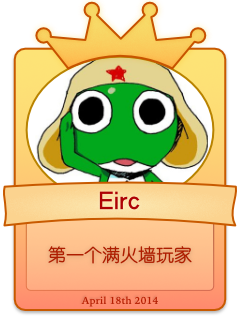
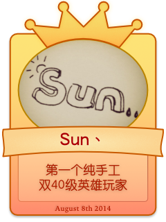
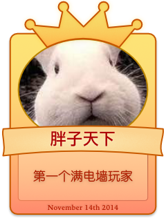

|  |  |  | ||
|  |  |  |  | |
|  |  |
历史印迹
- 2012年8月，Clash of Clans登陆App Store中国区市场。随后，功勋元老Jerome创立了CONQUERORS，此时，世界上存在的联盟不超过100个，CONQUERORS成为了Clash of Clans游戏第一批创立的联盟。同月，iSMart_cn，J.YaShine，Mango，luochuhan加入CONQUERORS，与创始人Jerome，以及_Gang Wu等人一起成为CONQUERORS最先加入的中国玩家。此后，CONQUERORS不断发展壮大，yu，jo，sid等人相继加入。
- 2012年9月，在Jerome的带领下，CONQUERORS开始了创盟以来第一次冲杯活动。这次冲杯活动带来的是CONQUERORS的一次短暂的高潮。Jerome杀入世界前100，iSMart_cn进入世界前170。而CONQUERORS排名也进入世界前100。
- 此后，CONQUERORS内部就是否继续冲杯问题产生了分歧。Jerome认为杯数有关部落荣誉，全员应保持在高杯段。而几名主要Elder iSMart_cn等人则认为冲杯时机尚不成熟，应当达到至少八本主要防御全满再考虑冲杯事宜。于是，想要稳步发展的部分成员离开CONQUERORS，建立了CONQUERORS的第一个分会－P.R.C。Leader为iSMart_cn。
- P.R.C建立初期处境不佳，由于当时尚且没有一个完善稳定的部落宣传方式，所以成员在一段时间内一直维持在起初加入P.R.C的20余人。此后Jerome和iSMart_cn的出众沟通天赋得到了展现，两人一同通过谈判商讨，陆续收编了几个华人小盟，使P.R.C和CONQUERORS人数达到了一个高峰。
- 2012年9月，Clash of Clans迎来重大更新，九本的加入使整个游戏的可玩性提高到一个全新的高度。J.YaShine成为更新之后最先升级九本的玩家之一，iSMart_cn紧随其后。此时，yu，jo，_Gang Wu，sid，Reaper，Stannly，mango，pangpang，luochuhan等P.R.C早期玩家也在七本、八本阶段稳步发展。
- 2012年12月，随着又一次游戏更新，英雄加入游戏。luochuhan第一时间秒出Babarian King，成为P.R.C第一个拥有英雄的玩家。在此之前，flymonkey00，ak_jindl_CN等人也加入P.R.C。此时P.R.C达到建盟以来的顶峰，部落排名最高达到世界前300。yu也在春节期间成为P.R.C首个8级墙全满的玩家。在之后的2月，3月，flymonkey00和ak_jindl_CN两人先后通过秒捐4星Giant和秒捐2星Dragon刷出了单周4000+和单周6000+的部落捐兵记录。值得一提的是jo，他曾连续数月保持单周1500+以上捐兵，成为持久玩家的典范。而iSMart_cn和J.YaShine——P.R.C的大当家二当家也保持单周1000+捐兵并曾达到过单周4000+捐兵。
- 2013年3月，Tribly加入P.R.C。此后他就接连刷新了P.R.C最快7本满防满墙，最快8本满防满墙的纪录，并曾创下过连续18小时不下线的壮举，直到CoC强制下线机制的确立，Tribly的连续在线才有所收敛。同月，iSMart_cn成为P.R.C首位百级玩家。一星期后，J.YaShine也加入Lv.100俱乐部。
- 2013年7月，在一贯不冲杯的P.R.C中，pangpang成为首位上2000杯的成员，两月后，ak_jindl_CN成为首位上2600杯的成员。他们所用的都是九本气球苍蝇流。
- 此后，随着P.R.C人数增多，单个盟的问题越来越凸显——高本玩家收到的联盟兵良莠不齐，人数限制导致潜力低本玩家无法加入等等。尽管有luochuhan和J.YaShine两位Elder公正及时的管理公会人事，这些问题仍然难以解决。在数次讨论之后，P.R.C排除了直接开分会和大幅度清理低本玩家两项提议，并创造性的提出了“双子盟”和“影子Elder”的概念，并加紧筹备新盟的建立。
- 2013年12月13日，在一个大雨瓢泼的凌晨，iSMart_cn，J.YaShine，ak_jindl_CN三人在厦大靠近情人谷的一栋宿舍楼里，初步确立了新盟的命名，理念以及管理方法。此后，iSMart_cn创建Tera.E. 洛基，J.YaShine创建Giga.D. 洛基，ak_jindl_CN留任P.R.C Leader，P.R.C开始搬家迁徙。两天后，临时Leader ak_jindl_CN修改P.R.C公告宣布P.R.C关闭，随后迁至Tera.E. 洛基，走过一度春秋有余的P.R.C宣告成为历史。一天后，两个名为LEADER的账号分别进驻Tera.E. 洛基和Giga.D. 洛基，标志着洛基家族“双子盟”和“影子Leader”概念的正式施行，自此，洛基家族双子盟正式建立。
- 2013年12月30日，洛基家族首创的「L.D.R.W.评估系统」进入内测阶段。该系统通过将评估玩家活跃度最重要的四项因素纳入评价函数，综合一名玩家的活跃度和对部落集体的贡献，提供适合洛基家族部落及类似部落情况的科学评估指标，并通过客观的评估治标对部落进行人员任命，或提供给广大玩家用于自我评价。该系统各项指标完全透明公开，欢迎广大玩家朋友试用探讨。
- 2014年1月1日，经过 leader 团队的数日努力，洛基家族官方主页正式上线，「L.D.R.W.评估系统」也同步正式启用。
- 2014年1月31日，洛基家族兄弟盟再添一员——Peta.M. 洛基。该部落定位为大师级秒捐部落，部落成员均为拥有六级弓箭手的活跃玩家。
- 2014年2月23日，洛基家族又建立了两个新的部落——Nano.D. 洛基、Pico.E. 洛基。前者与 Giga.D. 洛基相同定位，后者与 Tera.E. 洛基相同定位。
- 2014年5月26日，洛基家族首次冲杯活动圆满结束，最高达到世界第130名。
- 2014年5月29日，考虑到时常有洛基家族成员因为个人时间安排原因，暂时不能活跃游戏。为了保证部落的整体活跃程度，同时让暂时休息的成员有一个合适的部落安家，洛基家族的第六个部落 Deca.R. 洛基建立。Deca 作为首个 R 级别部落，其定位在于给 AFK 玩家一个休闲无压力的歇息处。
- 2014年10月14日，考虑到部落中成员对部落战熟悉节奏区别很大，为了保证每个人能快乐游戏，也为了保证部落的稳定性，洛基家族对 Peta.M. 洛基、Tera.E. 洛基、Pico.E. 洛基做出了整合，根据开战频率为三个部落规定了新的定位。